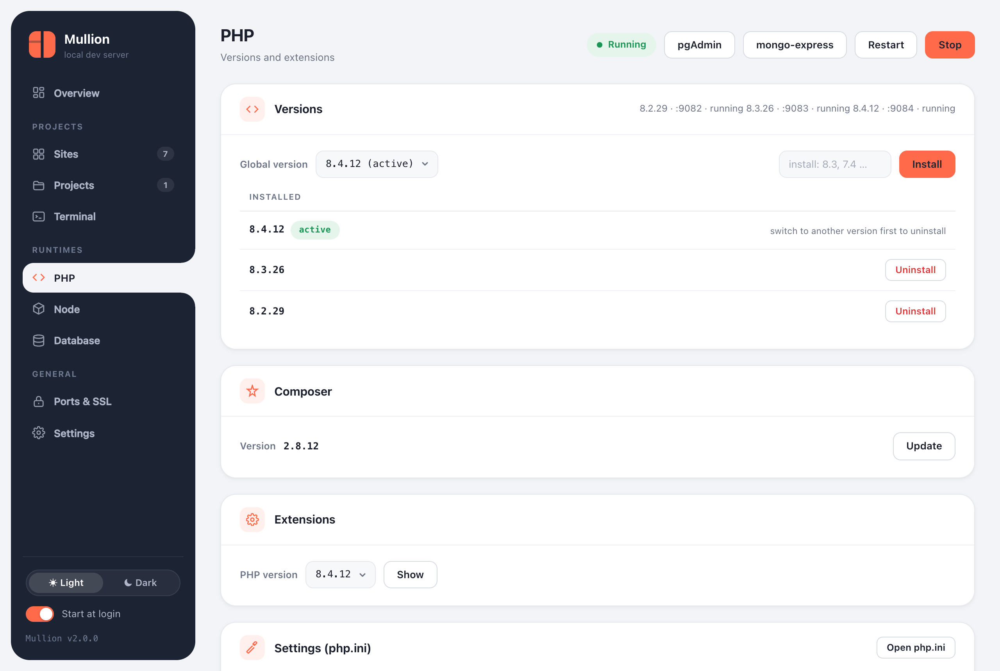

PHP
Several PHP versions side by side, set globally or per project, with extensions, php.ini settings and Composer.

Versions
$ mullion php available # current branches
$ mullion php install 8.3 # or a full version, e.g. 8.3.26
$ mullion php list
$ mullion use 8.4 # the global version (php on PATH)
$ mullion php uninstall 8.2- Windows uses the official builds from windows.php.net.
- macOS uses static builds from static-php.dev, which have no dependencies. The common extensions are compiled in, including opcache, intl, imagick, redis, sodium and the pdo_mysql, pdo_sqlite and pdo_pgsql drivers.
Each version runs its own FastCGI worker (php-cgi on Windows, php-fpm on macOS) on a port derived from the version: 8.3 uses 9083. Caddy sends each site to its own version's worker. The global php on your PATH is a symlink (a junction on Windows), so switching is instant.
Per-project versions
$ cd ~/code/legacy-app
$ mullion isolate 7.4 # this site keeps PHP 7.4
$ mullion unisolate # follow the global version againYou can also pin the version in the project page's header or Settings tab. Project commands, workers and project terminals always use the site's version.
Extensions
$ mullion php ext list # [x] = enabled; defaults to the global version
$ mullion php ext enable intl 8.3
$ mullion php ext disable xdebug
$ mullion php ext get redis # download a PECL extension and enable it (Windows)- Windows: every extension can be switched on and off, and PECL extensions (redis, xdebug, imagick, …) can be downloaded.
- macOS: extensions are compiled into the static builds. Only the ones with an ini on/off switch, OPcache and APCu, can be toggled. The panel shows the rest as read-only.
LDAP on macOS
The static builds don't include ldap. When you install a PHP version on macOS, Mullion builds ldap.so from the matching php.net source and enables it; mullion php ext enable ldap does the same. This needs the Xcode Command Line Tools (xcode-select --install). If they're missing, PHP still installs, just without LDAP.
php.ini settings
The panel's Settings (php.ini) card and mullion php ini edit a curated set of directives for each version. Mullion validates each value and restarts that PHP version:
| Key | Kind |
|---|---|
memory_limit | size (e.g. 512M, -1) |
upload_max_filesize, post_max_size | size |
max_execution_time, max_input_time, max_input_vars | number |
display_errors | on / off |
error_reporting | one of the common presets |
date.timezone | text |
opcache.validate_timestamps | on / off |
$ mullion php ini # effective values for the global version
$ mullion php ini 8.3
$ mullion php ini set memory_limit 1G
$ mullion php ini set display_errors on 8.2From the panel you can also open the full php.ini in your text editor.
Composer
$ mullion composer install # latest
$ mullion composer install 2.2.25 # a specific versionThe PHP page shows the Composer version with an Update button.
Another PHP comes first on PATH
If php -v shows another install (Laragon or XAMPP on Windows, Homebrew on macOS), mullion use detects it and offers to disable that PATH entry. Then open a new terminal.